큰 여자아이를 좋아하십니까? 당신을 손바닥 위에 올려놓을 만큼, 괴물처럼 큰 여자아이를 말이죠……. 『SAEKO: Giantess Dating Sim』(이하 SAEKO)는 어째서인지 인형 크기로 작아져 버린 주인공이, 자신의 수십 배나 되는 거대한 소녀, 사에코와 함께 나날을 보내는 호러 어드벤처 게임입니다. 개발을 담당하는 SAFE HAVN STUDIO의 kyp(키프) 씨는 거대한 여자아이를 사랑하는 “거대 소녀” 팬입니다. 그런 kyp 씨에게 심오한 취향과 미학을 여쭤보았습니다.
―자기소개 부탁드립니다.
내일 발매 『도시전설 해체 센터』 개발자 인터뷰. 게임을 못하는 사람에게야말로 접해줬으면 하는 새로운 어드벤처 게임의 형태란?
글: 마리조
공개 일시:
2025년 02월 12일(수) 18:20
내일 발매 『도시전설 해체 센터』 개발자 인터뷰. 게임을 못하는 사람에게야말로 접해줬으면 하는 새로운 어드벤처 게임의 형태란?
글: 마리조
공개 일시:
2025년 02월 12일(수) 18:20
하카바분코가 개발하고 슈에이샤 게임즈가 판매하는 PS5/Switch/PC(Steam)용 소프트 『도시전설 해체 센터』의 개발자 인터뷰를 전달합니다.
『도시전설 해체 센터』의 발매를 기념하여 개발 스태프에게 인터뷰를 진행했습니다. 슈에이샤 게임즈의 하야시:
마리 씨와 크리에이터 팀 “하카바분코”의 하후하후・오뎅:
씨에게 본작에 담은 생각이나 제작 시의 고집 등에 대해 충분히 이야기해 주셨습니다. 본작이 궁금한 사람은 꼭 확인해 주세요.
덧붙여 게임 내용에 대해 스포일러는 최대한 자제하고 있지만 게임 중 요소에 대해 언급하는 부분이 있으므로 그 점은 양해 바랍니다. (※인터뷰 중에는 경칭 생략)
도시전설 해체 센터』 개발자 인터뷰
하후하후・오뎅:
씨: 엔지니어, 그래피커, 시나리오, 사운드라는 4인조로 활동하는 크리에이터 팀 “하카바분코”의 그래피커.
하야시:
마리 씨: 슈에이샤 게임즈에 재직하고 있는 본작의 프로듀서.
SNS와 도시전설의 친화성이 높아서 실현된 현대 특유의 오컬트 미스터리
―『도시전설 해체 센터』에서 특징적인 염시로 과거의 흔적을 찾아가는 “탐색”이나 인터넷상의 소문을 쫓는 “SNS 조사”와 같은 게임 시스템은 어떤 흐름으로 만들어졌습니까?
오뎅:
2D 횡스크롤 어드벤처의 미스터리라는 의미에서는 (하카바분코의) 전작 『와카이도 마코토의 사건부』 시리즈가 형사가 살인 사건을 해결해 나가는 것이었기 때문에 현장 조사라는 요소는 원래 이미지로 있었습니다. 본작에서는 오컬트를 테마로 하고 있기 때문에 “염시”라는 요소를 더하고 있습니다. 그 장소에 있는 과거의 영상을 볼 수 있다는 염시라는 요소는 새로운 도전이었죠.
그리고 도시전설은 기본적으로 사람의 소문에 의해 만들어지는 것이고 현대 사회에서 그 소문은 어디에서 생겨나는지 생각하면 SNS일 거라고 생각했습니다. 그런 점에서 SNS를 사용하여 조사하게 되었습니다. 평소 저희도 좋아하는 아티스트나 작가에 대해 SNS로 조사한다고 생각합니다. SNS 조사는 현대 사회에서는 친숙한 시스템이 아닐까 느끼고 있습니다.
하야시:
SNS는 실제로 엄청난 물량이 있죠. 그 방대한 양 중에서 필요한 정보를 찾아내는 체감을 어떻게 만들 것인가는 하카바분코 씨와 논의했습니다.
예를 들어 글자가 흔들리거나 색이 입혀지는 것은 실제 SNS에서는 별로 없는 일입니다. 하지만 게임에서 일부러 색을 넣음으로써 혹시 중요한 것일까, 조사해 보는 것이 좋을까 하고 사용자가 능동적으로 조사할 수 있도록 한 것은 주력한 점입니다.
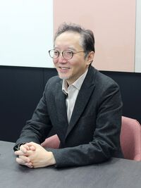
―완성까지를 되돌아보며 가장 고생한 부분이나 신경 쓴 부분을 알려주세요.
오뎅:
저희 게임은 기본적으로 엔딩까지 플레이하지 않으면 재미를 100% 이해해 주시지 못할 거라고 생각합니다. 따라서 엔딩까지 플레이해 주실 수 있는 구조를 만드는 데 신경을 썼습니다.
하야시 원래 저희도 이야기를 끝까지 클리어해 주셨으면 하는 마음이 있었습니다. 최근 게임에서 멀어진 사람이나 플레이는 하지만 클리어까지 가지 않는 사람에게도 본작을 계기로 게임을 끝까지 플레이해 주셨으면 합니다. 그리고 재미있었다고 말할 수 있는 체험을 해 주셨으면 합니다. 그런 마음도 있어 진행할 수 없다는 일은 없애려고 하고 있습니다.
선택지도 잘못 고르면 X표시가 되어 사라지기 때문에 최종적으로는 누구라도 클리어할 수 있습니다. 그 점은 의식했습니다. 그리고 화제가 되었으니 사볼까 하고 말할 수 있는 가격대로 억제하는 것은 정말 열심히 했습니다.
오뎅:
이런 장르는 늘면 늘수록 좋다고 생각합니다. 게임 플레이 시간은 엄청 길거나 겨우 15분 정도의 캐주얼한 것이 많은 가운데 이 정도의 콘텐츠가 늘어주면 기쁠 거라고 생각합니다.
하야시:
만화나 소설과 비교하면 게임은 좀 문턱이 높다고 생각하지만 어드벤처 게임이나 노벨 게임은 비교적 가까운 곳에 있습니다. 그런 의미에서는 “애니메이션은 봅니다, 소설도 읽습니다, 하지만 게임은 하지 않습니다”라는 사람에게 어필할 수 있다고 생각합니다.
버튼을 많이 사용하는 것은 어렵지만 어드벤처 게임이라면 버튼을 누르기만 하면 되고 저도 즐기고 있다고 말해 주는 사람이 늘어주면 좋겠네요. 그렇게 하면 어드벤처 게임에 대한 문턱이 낮아지거나 친근감을 가질 수 있지 않을까 생각합니다.
제작 중에는 오토 플레이 구상도 있었지만 체험하면서 읽어 주셨으면 하는 마음은 있었습니다. 따라서 이번 작품에서는 오토 플레이는 일부러 넣지 않았습니다. 또한 모두에게 플레이해 주셨으면 하므로 일부 사람이 불쾌하게 생각하는 표현이나 갑자기 화면이 튀어나와 놀래키는 계열의 것은 배제하고 있습니다.
오뎅:
가장 고생한 점으로 말하자면 현지화네요.
하야시:
본작은 대화뿐만 아니라 SNS 부분도 포함하여 문자량 볼륨이 꽤 있습니다. 그것이 하카바분코의 매력이고 그 매력을 세계에 알리는 것이 슈에이샤 게임즈의 역할이라고 느끼고 있었습니다. 다만 현지화에 있어서 본작은 어드벤처 게임이므로 중요한 텍스트를 현지 언어로 읽을 수 없다는 것은 벽이 됩니다.
가능한 한 현지화하자는 것으로 진행해 나갔는데 일본어를 포함하여 13개 언어가 있거든요. 번역은 번역대로 여러 가지로 열심히 했지만 그것을 포함하는 것도 힘들어서……. 예를 들어 아랍어는 거꾸로 표시해야 하고 그렇게 하면 현지 사람으로부터 이름도 왼쪽 표기에서 오른쪽으로 이동해 달라고. 여러 가지 요청이 와서 그것에 대응하고 있었더니 꽤 힘들었습니다.
오뎅:
제작 시에도 현지화는 어느 정도 의식했습니다. 도시전설을 고르는 방법도 마찬가지네요. 일본의 인터넷 괴담은 이 10년, 20년 정도에 급격히 발전하고 있어서 재미있어지고 있습니다. 반면 해외에는 별로 익숙하지 않은 것도 많습니다. 따라서 너무 일본에 치우치면 설명이 어려워지거나 와닿지 않거나 하는 일은 나올 거라고 생각했습니다.
하야시:
따라서 도시전설 선정에 관해서는 일본 독자적인 것을 일부러 고르거나 월드와이드로 세계에 알려진 것을 넣거나 하고 있습니다. 특히 가장 처음의 “침대 밑의 남자”는 세계에서 알려진 것입니다. 그런 의미에서는 번역되어도 이해하기 쉬운 도시전설을 찾았습니다. 처음 단계에서 어느 정도 세계 사람도 즐길 수 있도록 하자는 것은 처음에 이야기했었죠.
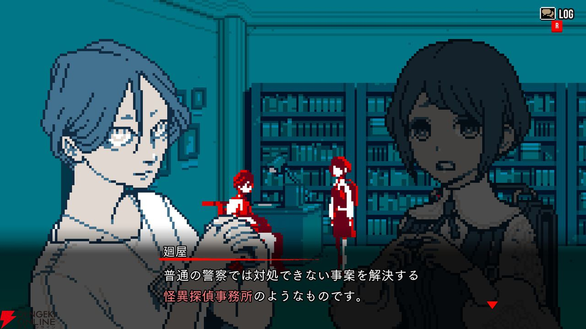
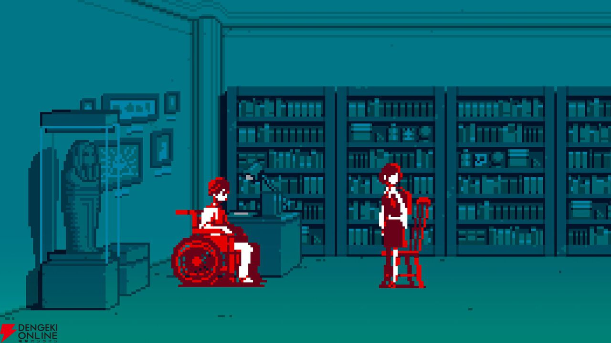
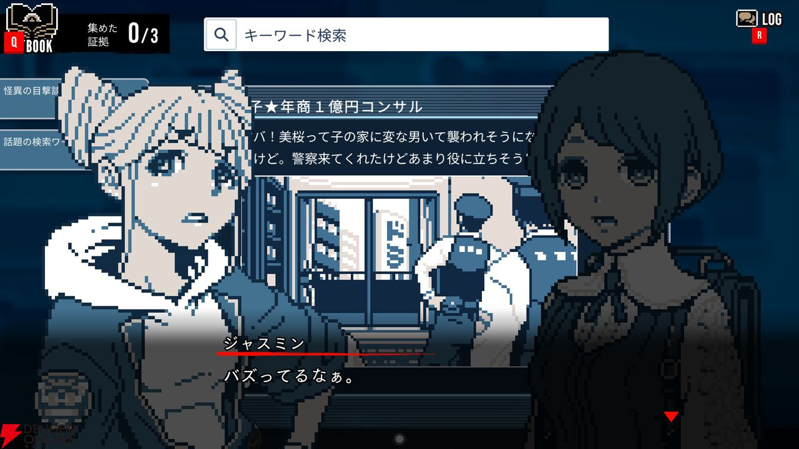
다만 반대로 너무 해외 게임에 맞추는 것 같은 일은 하고 싶지 않았습니다. 슈에이샤 게임즈로서는 작가성이나 작품성을 소중히 해 나가려고. 하카바분코 멤버가 정말 하고 싶은 것을 하지 않으면 의미가 없습니다. 반대로 말하면 거기에 매력이 있다면 세계에서도 통용될 거라고 생각하고 있으므로 그 매력은 없애지 않도록 하고 있습니다.
오뎅:
게임 중에도 만들면서 현지화가 힘들어질 것 같다는 장면도 꽤 있었네요.
하야시:
현지화는 채팅 툴로 현지에서 상담해 주시거나 사이에 번역하는 사람을 넣어 상담하거나 하면서 진행했습니다. 경우에 따라서는 비디오 미팅을 하면서 여기 어떻게 번역할까요라는 상담도 하카바분코 사람들과 하면서 했기 때문에 꽤 힘들었네요. 한국이라면 한국, 중국이라면 중국. 지역별 사람들과 번역하는 방법을 궁리하면서 해 나갔습니다. 해체 시의 결정 대사나 연출 등도 두 글자로 표현할 수 있는 곳은 그대로 하고 있습니다. 다만 알파벳 등은 들어가지 않기 때문에 한자로 표현하고 아래에 번역을 넣고 있습니다. 타이틀도 제대로 신경 써서 만들어 주셨습니다.
어려웠던 것은 각 도시전설의 번역이네요. 한 언어에도 여러 명의 번역가가 있기 때문에 틀리지 않도록 전부 시트에 정리하여 공유했습니다. 다만 번역은 고민했네요. 대만이나 중국 출신 스태프에게 물어보면서 고쳐 나가면서 진행했습니다.
―본작에서 이야기되는 도시전설로 다른 넣고 싶었던 것은 있었습니까?
오뎅:
솔직히 말하면 UMA나 외계인 계열의 것은 넣고 싶었습니다. 하지만 도쿄를 무대로 하고 있는 작품에서 UMA는 넣기 어렵고 외계인을 넣으려고 해도 이야기의 톤이 바뀝니다. 이야기의 메인 줄거리와 그 도시전설과의 궁합을 생각하면서 만들어 나갔습니다. 본 줄거리에 넣어도 괜찮지 않을까 하는 이야기는 몇 가지 있었지만 결국 이야기의 기복이나 현지화를 생각하여 지금의 현상에 안착한 느낌이네요.
하야시:
게임 메뉴 쪽에 토시카이 군이 소개해 주는 도시전설이 있다고 생각하는데 거기서 작품에 넣을 수 없었던 것을 넣고 있는 느낌은 있습니다.
―덧붙여 개발 중에 일어난 오컬트적인 에피소드가 있다면 꼭 알려주세요!
오뎅:
제 PC는 무슨 일이 있으면 데이터가 날아가는데 본작에 관해서는 날아가지 않았기 때문에 이번에는 없었다는 것이네요! (웃음) 슬슬 날아갈까…… 생각하면서 백업을 하고 있었다는 것은 있을지도 모르지만요.
하야시:
오컬트적인 에피소드는 아니지만 선배에게 부적을 받으러 갔다 오라는 말을 들어서 부적을 받으러 갔습니다! 또한 이 기획이 시작되자마자 弊社 사람으로부터 “이것은 발매일에 하야시:
프로듀서가 실종될까”라고 계속 듣고 있기 때문에 발매일에 실종될 가능성은 없다고는 할 수 없습니다 (웃음).
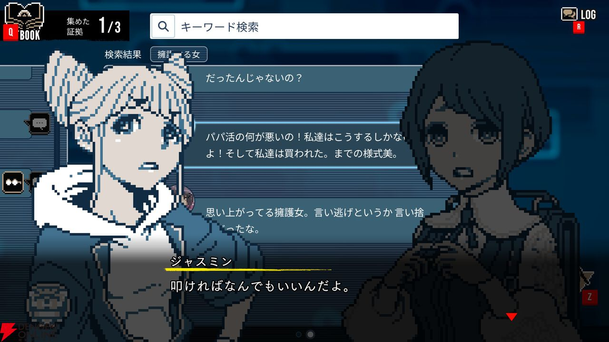
―최근 신경 쓰이는 도시전설이 있다면 알려주세요.
오뎅:
지금 핫한 것은 2025년 7월 5일의 예언입니다. 진짜가 아닐까 하고 SNS에서도 말해지고 있거나 유명한 기업 사람들이 전부 그 타이밍에 휴가를 내고 어딘가 간다고 소문이 돌거나. 엄청 도시전설 같아서 무언가 체험하고 있는 느낌은 조금 있다고 생각합니다.
하야시:
작년 연말쯤에 네시 정보가 또 새롭게 나온다는 이야기가 한창이었죠. 그렇게나 많이 이야기가 나왔었고 최근에는 잠잠해졌다고 생각했는데, 아직도 하는구나 하고. 꽤나 오래된 도시전설인데, 아직도 살아 숨 쉬고 있다는 점에 감탄했습니다.
오뎅:
저는 괴담을 엄청 좋아하는데 2000년대나 2010년대의 인터넷 괴담은 엄청 재미있습니다. 창작감은 희미하게 나오기는 하지만 그 부분이 매우 회색으로 되어 있는 것이 좋습니다. 게다가 게시판에 쓰여 있다는 것이 조금 실화 괴담에 가깝다고 할까. 실제로 있는 것이 아닐까 생각되는 곳은 역시 재미있는 곳이라고 생각합니다.
메구리야, 아자미, 쟈스민의 탄생 비화. 당초 플레이어 캐릭터는 메구리야였다!?
―본작에서 축이 되는 센터장과 아자미, 쟈스민 3명은 어떻게 태어났는지 알려주세요.
오뎅:
아무것도 정해지지 않은 상태일 때 『도시전설 해체 센터』의 기획서를 만들 시점에서 이미 미스터리한 분위기의 “메구리야”는 완성되어 있었습니다. 그것이 엄청 캐치하고 재미있다고 칭찬받았지만 다만 그는 너무 미스터리해서 플레이어 캐릭터에는 부적합하다고.
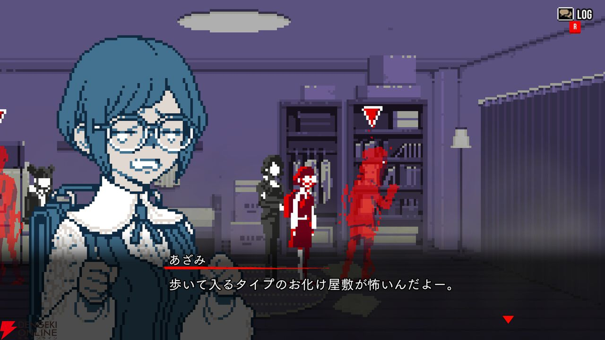
그래서 플레이어 캐릭터의 상징인 캐릭터를 따로 만들 필요가 있어 순수무구하고 선의 덩어리인 “아자미”를 새로 만들게 되었습니다. 쟈스민은 신인인 아자미의 가이드 역할을 하는 선배이고 별로 자신은 행동하지 않는 타입의 나른한 갸루 같은 캐릭터로 준비했다는 느낌입니다.
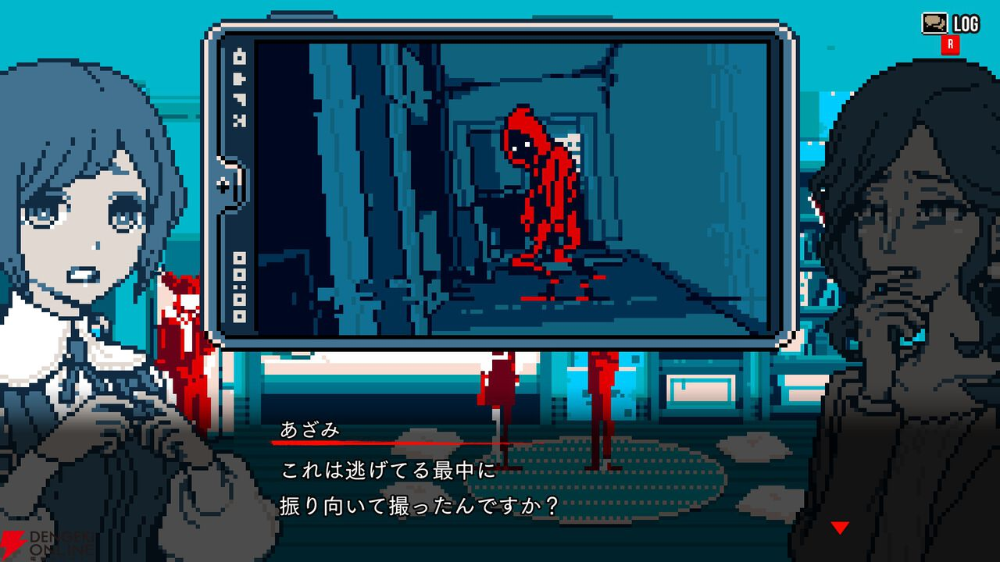
디자인에 관해서는 아자미는 한 번만 사실 변경하고 있습니다. 처음에는 강한 인상의 캐릭터였지만 메구리야는 미스터리하고 쿨한 이미지이고 쟈스민도 말하자면 조금 쌀쌀맞은 인상을 하고 있습니다. 따라서 좀 더 애교가 있고 밝은 캐릭터로 하는 것이 좋겠다고 하여 아자미는 현재의 캐릭터가 되었습니다. 캐릭터 디자인은 저희 시나리오를 써 주시는 킷캬와ー에게 부탁하고 그것을 도트 그림화하는 작업을 하고 있습니다.
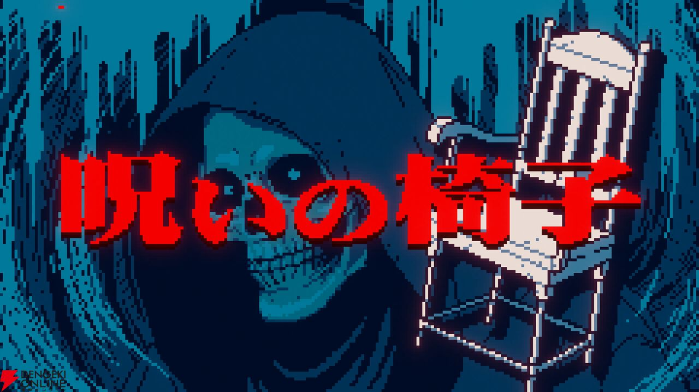하야시:
이번 오뎅:
씨들이 하고 있던 도트 그림은 예전 것과는 조금 다르다고 생각하고 있어 엄청 디자인적이라고 느끼고 있습니다. 색을 조이는 방법이나 사용하는 방법이 그래피컬하죠. 또한 애니메이션하는 방법이 현대풍입니다.
예전 도트 그림 움직이는 방법에서 벗어나 애니메이션이나 만화에 가까운 표정, 움직이는 방법을 하고 있어 그런 의미에서는 예전부터 있던 표현을 사용하면서 현대에 없는 비주얼을 만드는 것은 하카바분코의 도전으로서 있었을까 느끼고 있습니다.
―덧붙여 캐릭터의 억양은 정해져 있습니까? 개인적으로 쟈스민의 “아자미ー”라고 부르는 방법이 신경 쓰입니다.
하야시:
좋아하는 대로 불러주시면 좋다고 생각하고 있지만 “아자미ー”는 평탄하게 읽는 느낌을 이미지하고 있습니다. “디즈니”와 같은 (웃음).
―“특정”이나 “해체” 등의 연출은 원본 같은 것은 있는 것일까요.
오뎅:
솟아나는 기둥이지만 아까 말씀드린 것처럼 도시전설에서도 넣을 수 없는 것이 있습니다. 그 안에 고대 계열이나 역사 계열의 것이 포함되어 있는데 넣고 싶다는 생각이 있어 넣고 있습니다.
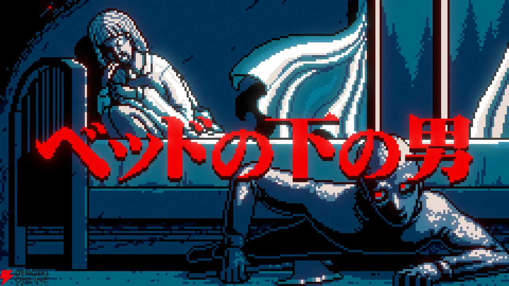
추리 미스터리라는 것은 추리하는 순간은 수수하죠. 게임으로서의 재미나 기분 좋음을 표현하기 위해 특정과 해체에 관해서는 이 연출을 넣고 있다는 의도도 있습니다.
해체는 완전히 가면라이더의 변신을 이미지하고 있습니다. 그 때의 포즈는 물론 오리지널이지만 사실 뒤에 의미가 있어……. 여기는 엔딩을 맞이한 분에게는 알 수 있는 부분이라고 생각합니다. 닌자의 인 같은 것이 해외에서 인기이므로 그런 것을 만들 수 있다면 하고. 그 부분, 아무 설명 없이 내놓고 있지만요 (웃음).
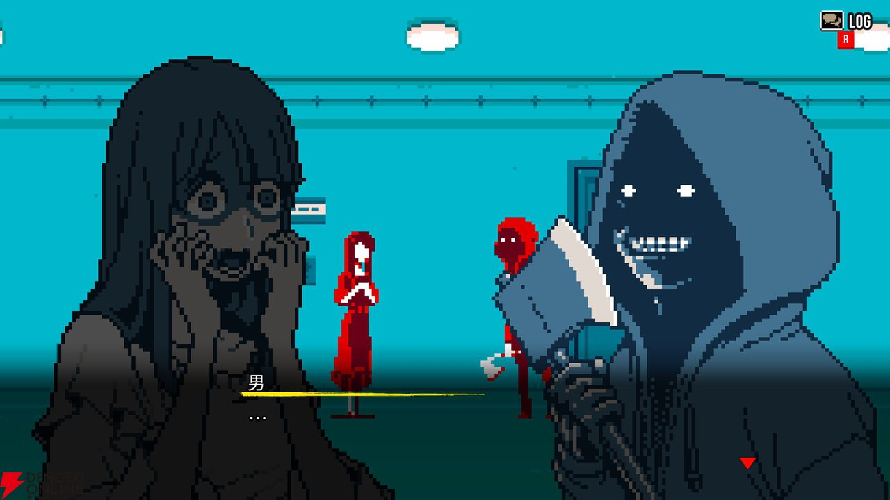
아이 오프너의 크기는 어느 정도일까 팀 내에서도 화제가 되어. 작다, 크다 등 각각 의견이 있어 아직 특정하지는 않았습니다.
오뎅:
일단 오파츠는 이미지하고 있지만요.
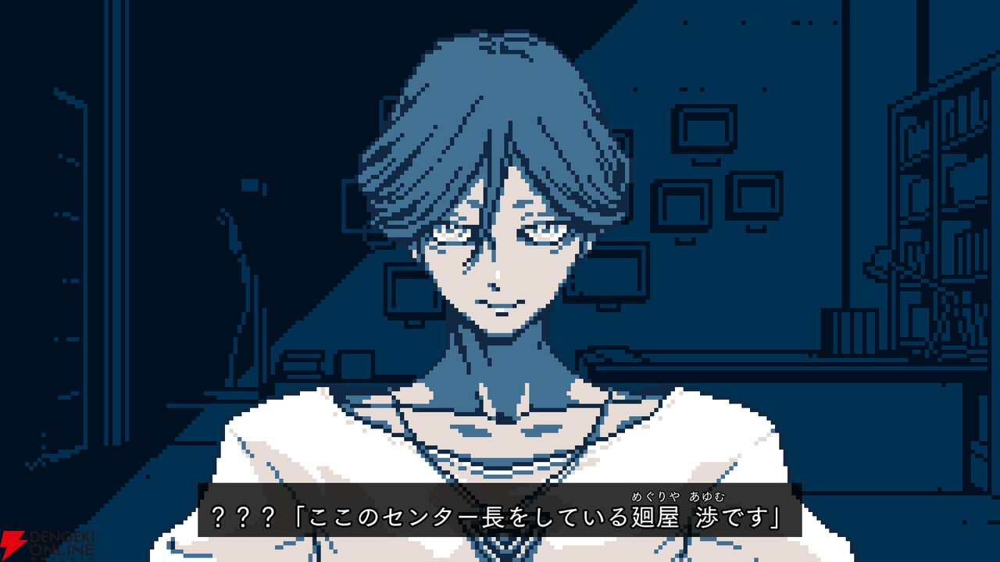
이야기에 더욱 몰입할 수 있는 사운드는 들어볼 가치 있음. 사운드트랙이 포함된 특전판도 꼭 확인!
―음악도 본작은 매우 훌륭했는데 음악 관련 제작 에피소드 등도 들을 수 있을까요?
오뎅:
칩튠 같은 예전 패미컴 음원을 처음에는 어떻습니까 하고 음악 담당으로부터 들었는데 정말 최근의 현대을 테마로 한 작품이므로 현대에 맞는 음악으로 하고 싶다고 전했습니다. 또한 오컬트라는 형태가 없는 추상적인 것이므로 신디사이저를 사용한 음악으로 해 달라는 이야기도 했습니다.
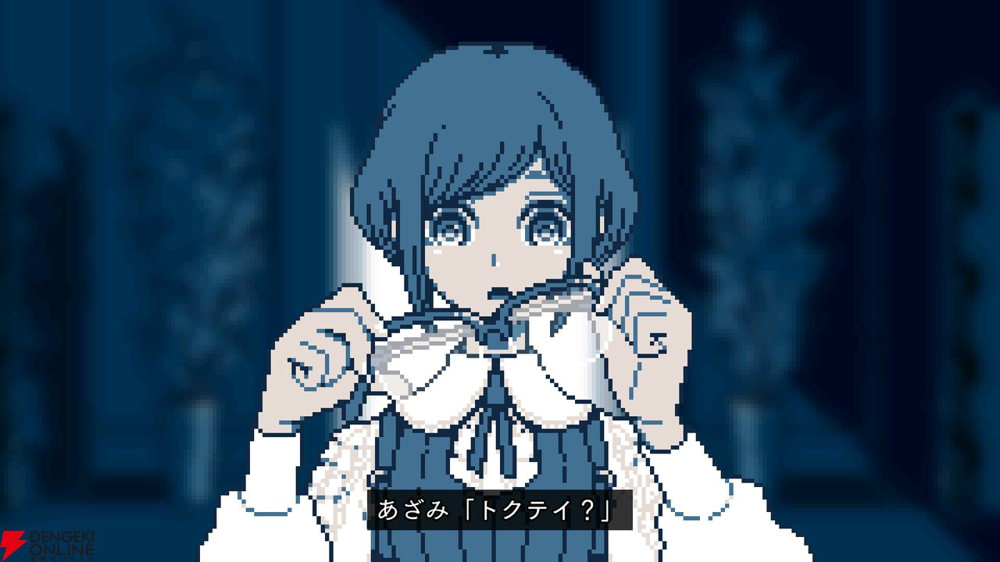
주제가에 관해서도 역시 현대적인 것으로 해 달라고 타진하여 랩이 들어가는 등 하고 있습니다. 주제가는 사운드 크리에이터 아다P가 아니라 예전부터 알고 지내던 다른 작곡가가 잘하는 장르로 해 달라고 하면서 가사는 도시전설이나 인터넷 괴담 계단 등을 테마로 하여 좋아하는 대로 써 주세요라고 주문했습니다. 다만 너무 잘 맞는 것도 좋지 않아서. 조금 다른 정도의 세계관으로 부탁했습니다.
하야시:
악곡은 Steam에서도 판매합니다.
―이번에 특장판도 발매되는데 볼거리를 알려주세요.
하야시:
이번 책자 내용물은 슈에이샤 게임즈에 있는 전 편집부 분에게 맡아 페이지 구성은 물론 오뎅:
씨의 인터뷰부터 무엇부터 제대로 만들어 주시고 있습니다. 이제 게임 인간으로서는 출판 프로에게 맡기는 느낌이 있어 상상의 몇 배나 좋은 것이 되었습니다. 스포일러나 개발 비화 가득하고 첫 페이지에는 스포일러 주의를 넣게 해 주시고 있습니다. 꼭 게임이 끝난 후에 봐 주셨으면 하네요.
오뎅:
어느 정도 이야기의 보충을 할 수 있는 내용도 되어 있다고 생각하므로 기대해 주세요. 사운드트랙도 게임 내 음악을 수록하고 있고 주제가는 짧은 것과 풀 2가지 버전이 들어가 있습니다.
하야시:
한정판 특전에는 보드게임 『도시전설 해체 센터 이계 유괴』도 붙습니다. 슈에이샤 게임즈에는 보드게임을 제작하고 있는 팀이 있어 그 팀 사람에게 협력받아 만들었습니다. 팀 멤버에게는 게임도 플레이해 달라고 하여 게임 세계관도 이해받은 후에 제작해 주시고 있습니다. 꼭 손에 넣고 즐겨 주시면 좋겠다고 생각합니다.
보드게임 제작에 있어서는 비주얼이나 말 부분에서는 어드바이스했지만 게임 디자인에 관해서는 弊社 게임 디자이너 미야자키 유우에게 맡겼습니다. 미야자키가 이전에 제작한 『잭과 탐정』을 베이스로 하여 본작의 세계관에 맞춰 제작했다는 형태입니다.
―그럼 마지막으로 본작을 손꼽아 기다리고 있는 유저에게 한마디 부탁드립니다!
오뎅:
하카바분코는 평소 게임을 하지 않는 사람이나 책을 좋아하는 분, 드라마를 좋아하는 분을 향해 게임을 만들고 있습니다. 따라서 그런 분에게 꼭 플레이해 주셨으면 하는 작품입니다. 또한 호러를 못하는 분도 플레이해 주실 수 있는 작품도 되어 있을까 생각합니다.
엔딩까지 도달하면 재미있었다고 생각해 주실 수 있는 작품이 되어 있으므로 꼭 플레이해 주세요. 스포일러 배려하면서 감상을 SNS에 포스트해 주시면 기쁘겠습니다.
→추후 스포일러가 있는 인터뷰도 게재 예정입니다!
이 기사를 쓴 사람
인터뷰 출처: room6 카모야나기 방송국 7번째 인터뷰